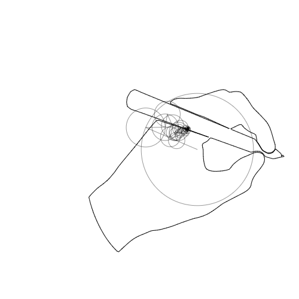

Click on the center or circumferance of a crankshaft to select it. Dragging
will then move or resize it.
Clicking on a sliprod collar point will select the sliprod. The collar point
can be moved by dragging. Clicking on the end of a sliprod to resize. This
is easier when the model is paused.
Clicking away from any widgets will clear the selection.
When a widget is selected, shift-clicking someonere will add a new sliprod with
a collar at the specified point. If no widget is selected, shift-clicking anywhere
will add a crankshaft at that point.
A mousewheel can be used to zoom in and out, and the right mouse can be used to pan
the view.
Background
This page is a simple study in some mechanisms of a crankshaft and sliprods. It was motivated
by seeing an toy on display at
Reach & Teach
that Derrick Kikuchi had constructed from origami
and k-nex widgets. A dolphin was on the end of a rod following a graceful path that was evocative
of a dolphin jumping out of water. The path was roughly curved, as it would be if it were following
a circular arc, but looked more natural. It was similar to the movement of the pigs shown in
here.
I suppose the path in such a case is better approximated by
a parabala, and by using the sliprod mechanism, a pleasing path was produced. That got me interested
in what paths could be produced by this kind of mechansim. Also, one end of the sliprod is driven
by a crankshaft, and is following exacly a circular path. What path is traced by the other end?
Is it also a circle?
This tool is in now way a general physics engine or simulator. But if you find this interesting
you should check out the delightful 2D engine called algodoo
Also, note that the question of what trajectories could be produced by a suitable mechanism is similar
to how fourier series could approximate curves. A good explorable explanation is
here.
>